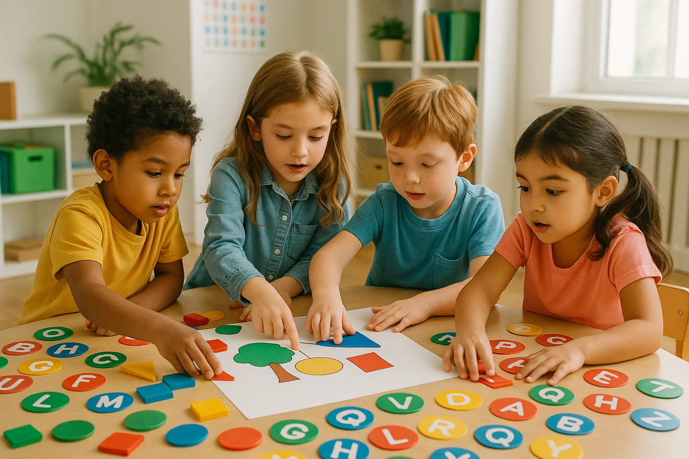

Ativo
Educação
Educação para Todos
Oferecemos reforço escolar, alfabetização de adultos e atividades complementares para crianças e jovens de comunidades em vulnerabilidade social.
280
Beneficiados
15
Voluntários
3
Locais
Como Você Pode Ajudar:
- Voluntariado: Professores, estudantes universitários
- Doações: Material escolar, livros didáticos
- Financeiro: R$ 50/mês custeia 1 criança